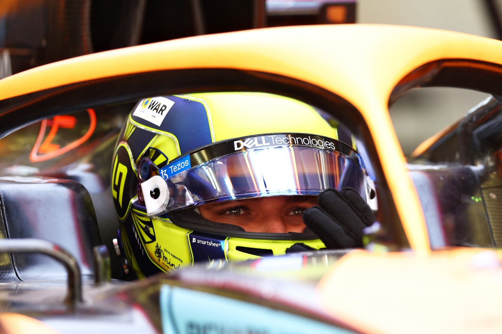

| Team | McLaren |
|---|---|
| Country | United Kingdom |
| Podiums | 6 |
| Points | 417 |
| Grand Prix entered | 80 |
| World Championships | N/A |
| Highest race finish | 2 (x1) |
| Highest grid position | 1 |
| Date of birth | 13/11/1999 |
| Place of birth | Bristol, England |
Biography
Lando Norris may not be named after Star Wars rebel Lando Calrissian
his Mum just liked the moniker - but he has flair and fighting spirit in bountiful supply.
McLaren had the British teenager on their books for two years before fast-tracking him into F1’s galaxy of stars in 2019.
A firecracker in his junior career, with a penchant for pole positions and wheel-to-wheel tussles, Norris didn’t let them down.
Paired with the highly-rated – and far more experienced – Carlos Sainz, his rookie season was impressive,
edging the Spaniard in their head-to-head qualifying battle, scoring points on 11 occasions,
and only narrowly missing out on a top-10 championship placing.
It was a similar pattern in 2020, with the affable Brit securing a maiden podium and moving up to ninth overall.
His unstoppable rise continued in 2021, with a further four podiums and almost a race win
as he dominated another more senior team mate, Daniel Ricciardo, to move up to P6 in the final driver standings.
An exciting talent on track, away from it Norris brims with a modest charm
and an artistic side sees him design and paint his own race gear as a hobby.
The focus for the future is allying artistry
and ambition on track as McLaren rely on the promise of youth to take them back to the top.
Norris hopes the downforce will be with him…
Gallery
